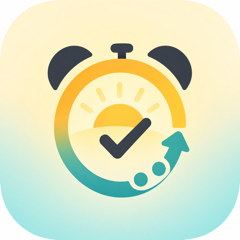

{{ post.title }}
{{ post.excerpt }}
記事を読む


勉強や運動の記録を習慣に
ポケットに、毎日の小さな工夫。
ひらくだけで、すぐに使える。
じっくり遊ぶ、次の楽しみ。
新しい公開と、小さなアップデート。
作ったもの、変えたことを紹介します。
{{ post.excerpt }}
記事を読むSoloCreateは、個人でゲームやアプリを制作・公開しています。遊ぶ楽しさや、日々のちょっとした便利を形にしながら、少しずつ作品を育てています。
プロフィールを見る